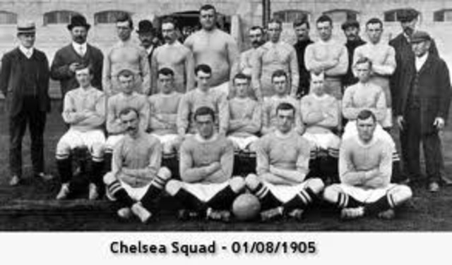
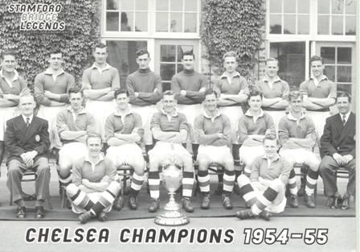
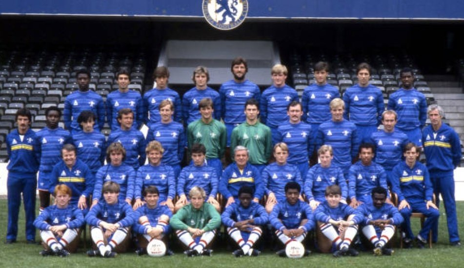
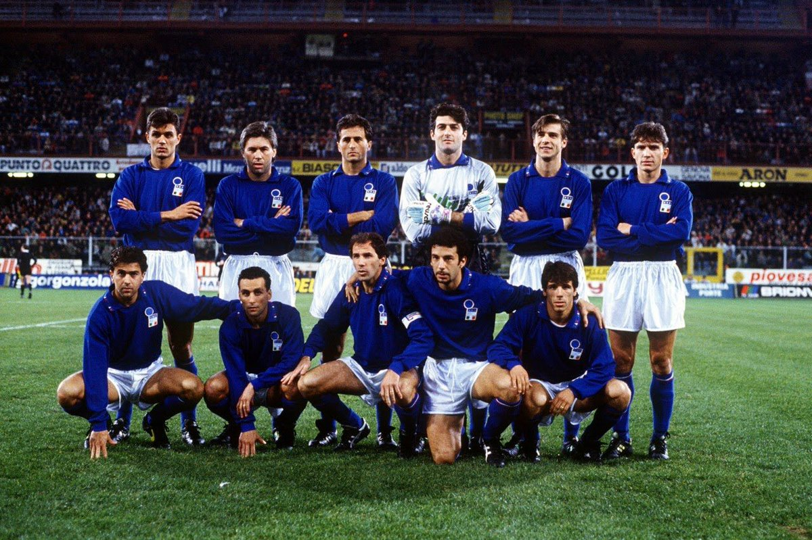
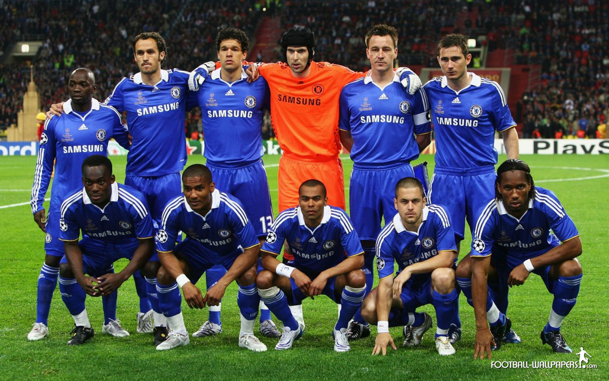
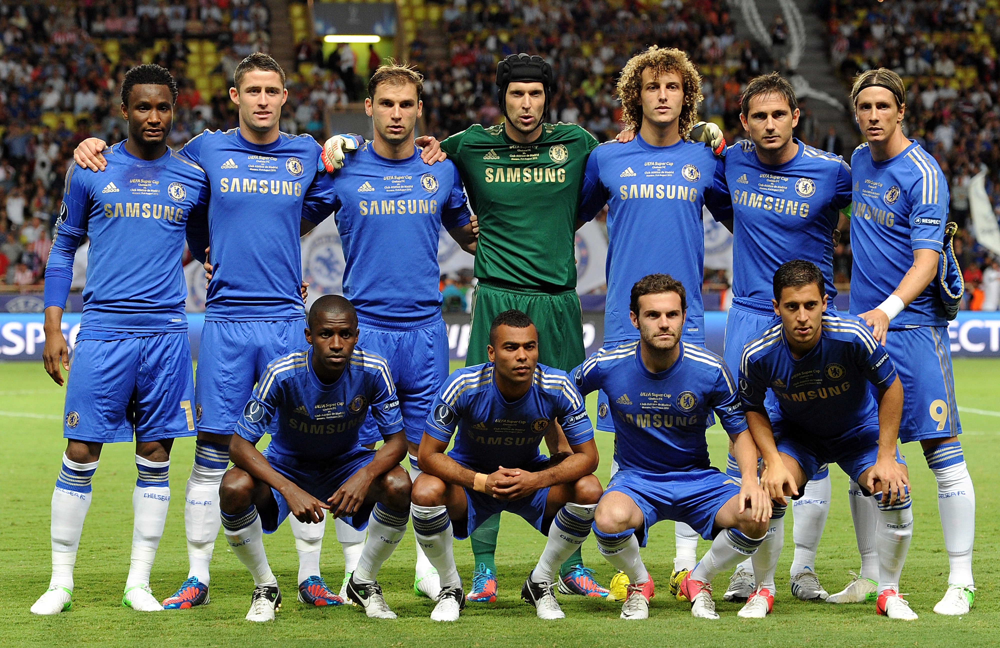

1905

Chelsea FC was founded in 1905 by Henry Augustus Mears, above is the first team photo ever publicized. Chelsea
was
promoted to first division in their second season.
1955

After 50 years of drought, Chelsea FC wins their first major trophy. A league championship!
1983

Revival of CFC after relegating and promoting twice in 20 years. New manager John Neal made a series of
signings that brings CFC back into competetiveness.
1991

Chelsea qualifies for the first time to European competitions and becomes a force to be reckoned with. Our
club starts reaching top of the leaderboard and signing of Dennis Wise who assures us of a prolific future.
2004-2005

New ownership of Roman Abrahamovic allows us to win our first Premier League and a second one in 2005. A new
Chelsea is born where being champions is expected.
2012

Chelsea wins it's first Champions league, proving doubters wrong and assuring us into a place in the hall of
fames of biggest clubs in the world. Proving once more, we are the ones to beat.